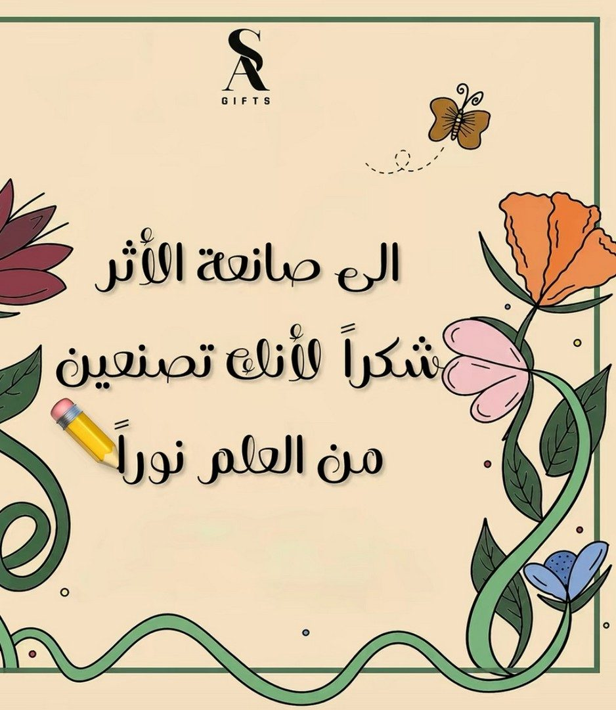

الخميس ٢٧ / ٤ / ١٤٤٨هـ١٢ طالبةالمجال الاجتماعي والقيمي
عن النشاط
نشاط للاحتفاء باليوم العالمي للمعلم؛ بدأ بعرض تعريفي عن المناسبة ومكانة المعلم، ثم صممت الطالبات بطاقات شكر وتهنئة، واختُتم بتجهيز توزيعات رمزية أُهديت للمعلمات.
صور تنفيذ النشاط

بطاقة شكر من تصميم الطالبات: «إلى صانعة الأثر، شكرًا لأنكِ تصنعين من العلم نورًا».توزيعات رمزية (أقلام مزيّنة) أُهديت للمعلمات.